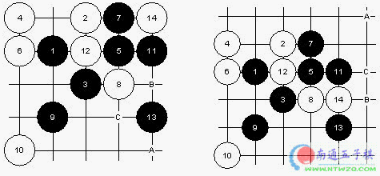

殷立成七段点评浦月实战
#1 殷立成七段点评浦月实战 作者：有志青年 发表时间：2006-6-2 20:38:22
当我看到这个棋谱的时候，就感到有很多东西想和大家说说，尤其对五子棋初学者来说是很重要的。 我相信很多五子棋爱好者会经常听到浦月、花月必胜局，白棋没得下的说法。而且在正式的高水平选手比赛中根本见不到。但我觉得这并不是浦月、花月的全部内涵。让我来看，浦月、花月是对我们掌握五子棋技巧的试金石。它能充分的体现你对棋的认知程度。 说得大一点，即使在实战中见不到浦月、花月局。但在其它开局里，也将反应出你对这两个开局的认识（就是五子棋技巧），所以理解其中的手段，而不是胜的棋谱，这才是学习浦月、花月（强开局）的重点。望大家多多去体会棋局中的技巧。 好！废话多了点，我们看实战。黑7体现了序盘争二的一个基本道理。白8强防，黑9适应手，根据对方的不同应点，考虑不同的进攻区域。11做棋，好棋！白12强防。白棋18如果反挡，黑于31位活三，白棋的反击无法取得效果。白棋20疑问手？此时白棋只能于21位防守。而黑21只要单做25位就杀了。不过，正是白棋如此的弱，黑棋随后到下得太随意了，连白棋的四三都没注意，就怎么简单的输了。 好！下面我们看看对13点的一些理解，13单走在15也是对白棋的巨大打击。同样是放守8-12这条白线，但这里产生的效果是很不一样的！如图，根据白棋的不同防守，黑棋产生的A、B、C三个利用的点位是不同的，大家体会一下留三（眠三）不冲的好处！

#2 Re:殷立成七段点评浦月实战 作者：光辉 发表时间：2006-6-2 22:47:35
蒲在有交换的规则里还是比较少出现的，那天在ORC有个4D的开了蒲，也不知道什么规则，还要3打，让我交换了。走了几手对手就认负了。#3 Re:殷立成七段点评浦月实战 作者：yidefei 发表时间：2006-7-21 12:46:21
高呀！